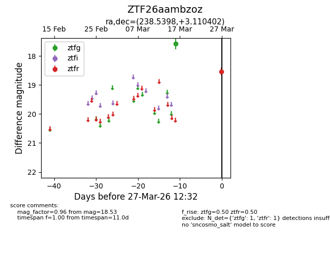
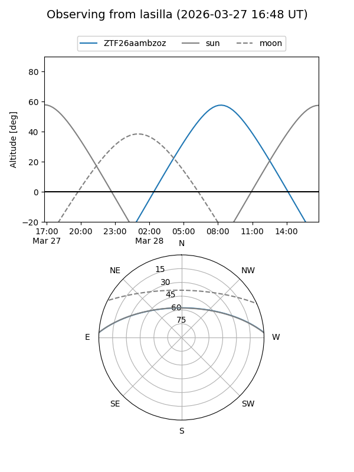
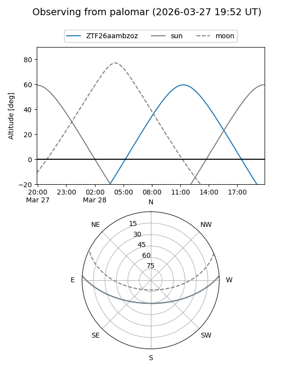

ZTF26aambzoz
Target ZTF26aambzoz at 2026-03-27 12:37
Aliases and brokers:
FINK: link
Lasair: link
ALeRCE: link
alt names
ZTF26aambzoz (ztf,fink_ztf)
Coordinates:
equatorial (ra, dec) = 238.5398,+3.11040
equatorial (HMS+DMS) = 15:54:09.56,+03:06:37.45
galactic (l, b) = (12.2411,+40.21257)
Flags:
Photometry:
last ztfg=17.59, ztfr=18.53
1 ztfg, 1 ztfr detections
Lightcurve

Visibility


Additional plots